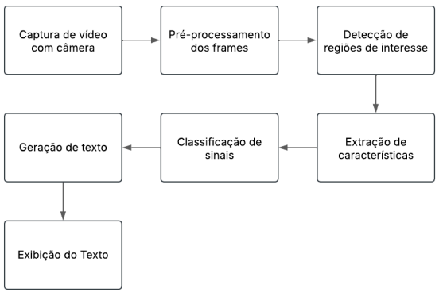

Etapa 0 - Entrevistas Empáticas
Ainda será adicionado.
Etapa 1 - Contexto e Cenário de Aplicação (CA)
Ainda será adicionado.
Modelagem Funcional do Sistema 📄
Este documento traz uma breve visão geral sobre o cenário de aplicação escolhido pelo grupo para o sistema de tradução de Libras para texto. Na sequência, é apresentado um diagrama de blocos seguido da descrição de cada parte do mesmo, com o objetivo de apresentar as etapas do funcionamento do sistema, seu fluxo de dados e o detalhamento das informações de entrada, de saída e do processamento realizado em cada bloco.
Visão Geral do Sistema
O sistema a ser desenvolvido pela equipe será um protótipo que utilizará técnicas de Visão Computacional e Processamento de Vídeo para traduzir sinais específicos de Libras para texto escrito em português. Além disso, o sistema terá como foco a utilização em clínicas e hospitais, sendo capaz de reconhecer sinais usados em triagem de pronto-socorro ou em consultas clínicas básicas como sintomas, dores, respostas simples como "sim", "não", "febre", "dor de cabeça", entre outras.
O sistema será composto por alguns módulos que atuam de forma sequencial. A entrada principal será um vídeo capturado em tempo real de uma pessoa sinalizando em Libras. O processamento envolverá a captura desse vídeo, pré-processamento de frames, extração de características, classificação dos sinais e, por fim, a exibição do texto traduzido.
Diagrama de Blocos
Descrição dos Blocos do Sistema
| Bloco | Entrada | Processamento | Saída |
|---|---|---|---|
| Captura de vídeo com câmera | Vídeo em tempo real | Captura contínua de frames | Sequência de frames |
| Pré-processamento dos frames | Frames | Remoção de ruído, filtros, ajuste de contraste | Imagens tratadas |
| Detecção de regiões de interesse | Imagem tratada | Segmentação para isolar mãos e braços | Regiões de interesse |
| Extração de características | Região de interesse | Extração de formas, contornos, pontos | Vetor de características |
| Classificação de sinais | Vetor de características | Modelo de Machine Learning para reconhecer sinais | Rótulo do sinal |
| Geração de texto | Rótulo do sinal | Conversão do rótulo reconhecido para texto | Texto em português |
| Exibição do texto | Texto | Exibição na interface | Texto exibido na tela |
Tecnologias Previstas
- Linguagem de programação: Python
- Bibliotecas: OpenCV, TensorFlow/Keras, etc.
- Dispositivo de Entrada: Webcam ou câmera de celular
- Dispositivo de Saída: Tela de computador ou smartphone